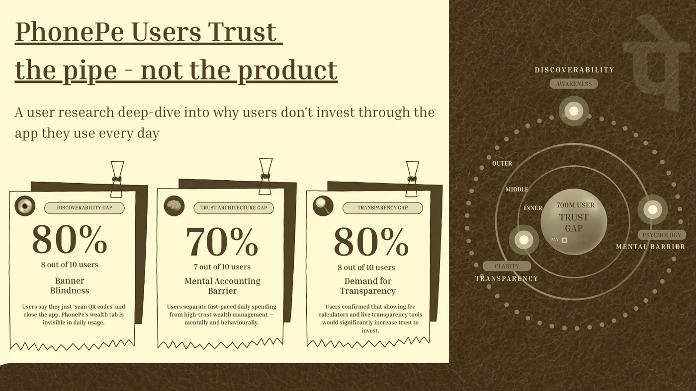
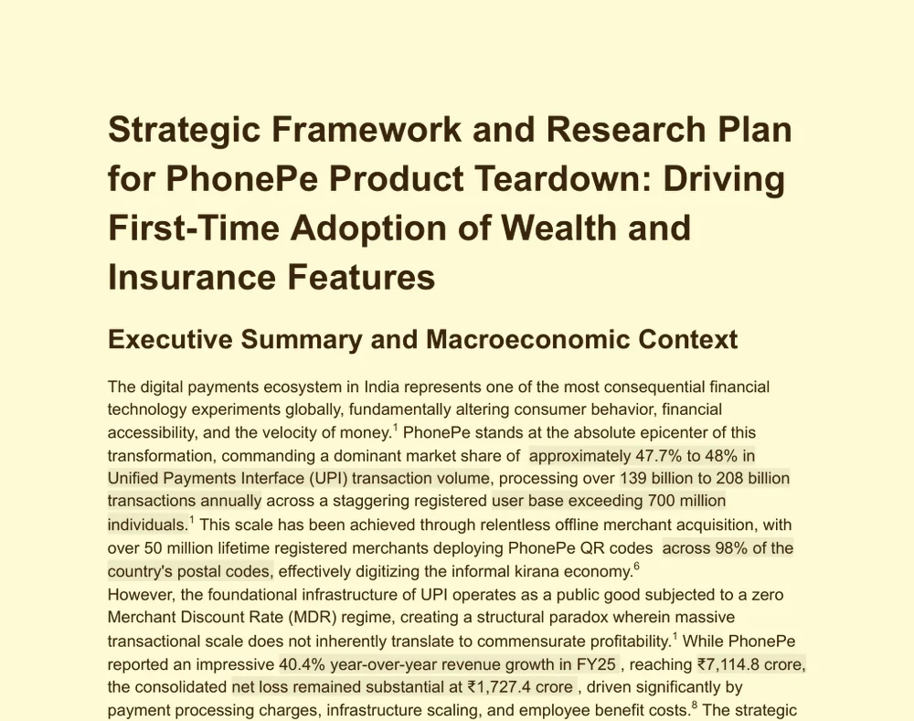

Hi! I'm Disha Kanojia
DataAnalyst
I check what the data really says, then turn it into a decision.
B.Tech ECE at NSUT Delhi ('27). I clean messy data in SQL and Python, test what's actually true, and end every project with a recommendation and what it's worth.

"A number isn't an insight until someone knows what to do with it."
About me
An engineer by degree, an analyst by choice
Hi, I'm Disha. I like the moment a messy spreadsheet turns into a clear answer that someone can act on.
I study Electronics & Communication at NSUT, where I learned to measure carefully and distrust a signal until it's been checked. I bring the same habit to data. In my projects I've found that a retailer's "late delivery" problem was really a broken promise, worked out which patients a nurse should call first, and built a model that catches 84% of job scams.
I care most about data that changes something real. Outside class I founded SRIJAN, a circular-economy venture that has recycled 50,000+ sheets of paper. I've also modelled a clean-up plan for the Yamuna river for the Ministry of Education, and I lead robotics teams at ARES.
I speak English, Hindi and Sanskrit, and I'm happiest when I'm explaining a finding to people who don't work with data.
"A number isn't an insight until someone knows what to do with it."
Collect & clean
Turn raw, messy files into one trusted table, and keep a record of every fix.
SQL Server · MySQL · pandas
Analyse & test
Rule causes in or out with SQL, statistics and machine learning, and state the limitations.
CTEs · window functions · scikit-learn · SciPy
Visualise
Dashboards and charts that answer one question per page.
Power BI · DAX · matplotlib · Streamlit
Recommend
End with what to do, what it's worth, and a summary leadership can read in 5 minutes.
ROI models · product strategy · Figma
Selected work
Case studies
Click any picture to read the full case study. Every project links to its notebook, SQL and dashboard on GitHub.
Diabetes patient readmission risk analytics
Which diabetes patients should a support programme call first?
Bank customer churn analysis
Who is leaving the bank, and who should we call first?
PhonePe product teardown · Wealth & insurance
Why 700M+ users trust PhonePe to pay, but not to invest
Team project (ROI Rangers), 2026
Fake job posting detector
Catching job scams when only 4.8% of ads are fake
Laptop price predictor
Pricing a laptop from its specs, within ₹9K
Vera Pulse · magicpin AI Challenge
A WhatsApp growth assistant that never makes up a number
CineMatch · Movie recommender
Movie recommendations in under a second
Heart disease prediction
A KNN classifier on patient health data, with a scaled pipeline, deployed as a Streamlit app.
End-to-end loan analysis dashboard
Power BI with Dataflows, 15+ DAX measures and incremental refresh. Data latency fell from 24 hours to under 1 hour.
Medick · Healthcare website
A responsive healthcare site built for the Future Ready Talent programme (2024).
Writing & research
How I explain my findings
Analysis only matters if people understand it. These are documents I wrote for decision-makers.

PhonePe users trust the pipe, not the product
Personas, a journey map, a funnel breakdown and 4 redesign prototypes.
View the deck →
Driving first-time adoption of wealth and insurance features
The research framework, market context and hypotheses behind the teardown.
Read the plan →A real-time detection pipeline in Verilog
Over 95% detection accuracy, building on University of Maryland hardware security coursework.
Available on requestExperience
Internships & education
Internships
Technology & Product Research Intern
Jun – Aug 2025DRDO, Solid State Physics Laboratory (SSPL), New Delhi
- Benchmarked high-frequency HEMT devices with VNAs and load-pull tuners, and turned lab measurements into impedance contour plots that informed device selection.
- Simulated a 10 m wireless transceiver (QUCS-S) and compared bit-error rates across multipath conditions in GNU Octave.
Programme & Policy Research Intern
Jun – Aug 2024Unnat Bharat Abhiyan, Ministry of Education · IIT Delhi
- Analysed Excel data across 20+ rural research projects and ran KPI tracking for the Sustainable Agriculture group, building frameworks adopted across the portfolio.
- Reviewed environmental proposals with IIT professors for feasibility and resource allocation, which informed government funding decisions.
- Modelled a Yamuna River duckweed clean-up projecting a 60% cut in heavy metals, presented as a ministry policy brief.
Education
B.Tech, Electronics & Communication (Minor in IoT)
2023 – 2027Netaji Subhas University of Technology (NSUT), Delhi
- CGPA 7.72
- Research paper: Hardware Trojan detection in FPGA-based ECG systems (Verilog), with over 95% detection accuracy
Class XII (CBSE) · Class X (CBSE)
2023 · 2021Air Force Senior Secondary School, New Delhi
- 82% in Class XII · 94% in Class X
Leadership
I've built and run real ventures
This is where I learned market research, pricing, go-to-market and managing people, on projects with real revenue.
Vice President, Enactus NSUT · Founder, SRIJAN
Sep 2023 – Present80+ member social-entrepreneurship society
- Founded SRIJAN, a circular-economy venture: ₹4.8L revenue, 50,000+ paper sheets recycled, 10+ corporate clients, and 10 workshops for 500+ people.
- Built the go-to-market for Project AGNI (₹1.6L revenue, 12 women employed): research across 3 buyer segments, a P&L for 5 products at 52–61% margins, and a 60:40 B2B:B2C channel plan.
Event Management Head, ASPIRE
2025Annual fest of Enactus NSUT
- Ran a 1,000+ footfall fest end to end, covering logistics, sponsorships and speaker sessions across teams.
Innovation & Projects Lead, ARES Robotics
Dec 2023 – PresentRobotics society, NSUT
- Led cross-functional teams building robots for national competitions.
Toolkit & recognition
Skills I've used in shipped projects
Analytics
Data science
Business & product
Also

Let's talk about your data.
I'm looking for Data Analyst, Business Analyst, Data Science and Product roles. The fastest way to reach me is email. I usually reply within a day.